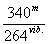

DES DIMENSIONS DES TUYAUX
« Dans une série d'expériences faites en vue de déterminer exactement les sons harmoniques des tuyaux d'orgues, dans le but de créer des nouveaux jeux avec des séries de tuyaux donnant leurs harmoniques au lieu du son fondamental comme on l'avait fait jusqu'alors, j'ai reconnu : 1o que les longueurs des parties vibrantes de la colonne d'air à partir de l'extrémité ouverte des tuyaux se trouvaient toujours conformes à la théorie de D. Bernouilli, c'est-à-dire que ces parties étaient égales aux longueurs d'onde correspondantes au ton des tuyaux ; 2o que le diamètre du tuyau n'avait aucune influence sur la longueur de ces subdivisions de la colonne d'air, mais que la partie contiguë à l'embouchure subissait, au contraire, un raccourcissement d'autant plus grand que le diamètre du tuyau était plus considérable.
« Cette dernière circonstance, observée par Bernouilli lui-même et par les physiciens qui ont étudié la question après lui, avait porté les théoriciens à faire abstraction de l'embouchure des tuyaux pour ne considérer que des tubes complètement ouverts aux deux bouts, ou bien entièrement fermés d'un seul côté. De cette manière on mettait à peu près la théorie d'accord avec l'expérience ; mais ce genre de tubes sans embouchure ne pouvait recevoir aucune application dans la facture.
« Toutefois, comme dans la pratique on ne peut pas se contenter des spéculations isolées de la théorie, il était nécessaire de considérer les tuyaux munis de leurs embouchures usuelles et de chercher à mettre la théorie d'accord avec les faits.
« Après quelques expériences sur des tuyaux de bois de différentes dimensions, je crus m'apercevoir que la véritable longueur du tuyau était égale à la longueur de l'onde (correspondante à son intonation) diminuée de deux fois la profondeur intérieure du tuyau.
« Les observations que j'ai eu occasion de faire depuis cette époque sont venues confirmer mes prévisions. Voici quelles furent mes premières expériences :
« Un tuyau de bois à base carrée donnant l'ut 2 (dit de 4 pieds), coupé en ton d'après le la normal de 880 vibrations par seconde, ayant 0m08 de profondeur intérieure et pour longueur 1m13. Le ton de ce tuyau correspondant à 264 vibrations par seconde.
« Maintenant si nous supposons la vitesse du son à la température moyenne de 15 degrés de 340 mètres par seconde, l'onde sonore correspondante au tuyau précité sera de  = 1m288, et si nous retranchons de la longueur de l'onde trouvée deux fois la profondeur du tuyau, c'est-à-dire 0m08 × 2 = 0m160, on aura, pour la longueur calculée du tuyau, 1m128, ce qui ne donne qu'une différence de 0m002 sur la longueur trouvée expérimentalement qui est de 1m130.
« L'ut grave de 32 pieds de la pédale de flûte de l'orgue de Saint-Denis avait été coupé à la longueur de 9m566 ; sa profondeur est de 0m48. Ce tuyau s'est trouvé trop long d'après le diapason de 880 vibrations par seconde, sur lequel cet orgue est accorde. Ce résultat est venu encore confirmer l'hypothèse ci-dessus.
| L'onde sonore de ce tuyau étant de |
|
10m30 | |||||||
| en diminuant le double de la profondeur, c'est-à-dire 0m48 × 2 = 0m96, ci | 0m96 | ||||||||
| il reste pour la longueur calculée du tuyau | 9m34 | ||||||||
« Or, la différence de 0m226 en moins de la longueur calculée à la longueur d'abord fixée s'est trouvée justifiée par l'ouverture qu'on a dû pratiquer à l'extrémité du tuyau pour l'accorder en sa place.
« D'après ces premières observations, je fus naturellement conduit à vérifier cette loi sur des tuyaux de dimensions les plus opposées, et l'expérience ayant constamment confirmé mes prévisions, j'en ai conclu, ainsi que je l'avais tout d'abord remarqué, que la longueur des tuyaux en bois est égale à la longueur de l'onde sonore diminuée de deux fois la profondeur du même tuyau.
« Si nous désignons par
V la vitesse du son,
N le nombre de vibrations,
L la longueur du tuyau,
P la profondeur intérieure,on aura, pour déterminer l'un de ces quatre cléments qui concourent à la détermination du ton,
(1)
L = V - 2P N (2)
N = V L + 2P , (3)
P = 1 ( V - L ) 2 N , (4) V = (L + 2P) N . « Soit, en langage ordinaire :
« (1) La longueur du tuyau est égale au quotient de la vitesse du son par le nombre de vibrations diminué de deux fois la profondeur.
« (2) Le nombre de vibrations est égal au quotient de la vitesse du son par la longueur du tuyau augmentée de deux fois la profondeur.
« (3) La profondeur est égale à la moitié du quotient de la vitesse du son par le nombre de vibrations diminué de la longueur du tuyau.
« (4) Enfin la vitesse du son est égale au produit de la longueur du tuyau augmenté de deux fois la profondeur par le nombre de vibrations.
« Dans une autre série d'expériences sur des tuyaux cylindriques en métal, nous avons été à même de reconnaître que la loi qui s'applique aux tuyaux prismatiques en bois à base carrée régit également les tuyaux cylindriques.
« Nous devons toutefois faire remarquer qu'il ne faut pas confondre la profondeur du tuyau avec son diamètre, comme on pourrait le supposer par analogie avec les tuyaux de bois à base rectangulaire. Dans ces derniers tuyaux, la profondeur est la même que la largeur du côté perpendiculaire à la ligne de l'embouchure, tandis que, dans les tuyaux cylindriques, la profondeur est nécessairement plus petite que le diamètre. L'aplatissement de la bouche, qui est habituellement du quart de la circonférence du tuyau, forme une corde sous-tendant un arc égal aux 3/4 de cette même circonférence. C'est ici la moyenne des perpendiculaires abaissées de cette corde sur l'arc opposé qui doit être prise pour la profondeur. Or, cette moyenne peut être représentée sans erreur sensible par les 5/6 du diamètre, et en remplaçant la valeur de P de notre formule par
|
, on aura |
|
d'où il suit que, pour les tuyaux cylindriques, notre formule sera
| (1) |
|
Soit enfin, en langage ordinaire : La longueur des tuyaux cylindriques est égale au quotient de la vitesse du son par le nombre de vibrations moins les 5/3 du diamètre tuyau.
« Plusieurs tableaux d'observations rapportés dans ce Mémoire viennent à l'appui de cette nouvelle théorie, qui se trouve d'ailleurs confirmée par vingt années d'application à la construction des grandes orgues que j'ai exécutées depuis cette époque.
« La facilité des calculs de cette formule m'a permis de mettre entre les mains de mes plus simples ouvriers accordeurs des Tables et des règles où sont indiquées les vraies longueurs d'ondes sonores, et au moyen desquelles ils peuvent, par une simple opération d'arithmétique ou seulement de compas, déterminer directement et avec une exactitude rigoureuse la longueur normale des tuyaux pour le son fondamental, la position des nœuds de vibrations pour les sons harmoniques, le prolongement des tuyaux a ouvertures latérales, les proportions de ces mêmes ouvertures, à l'effet de régler exactement l'accord et l'homogénéité des sons. »
| A. CAVAILLÉ-COLL. |